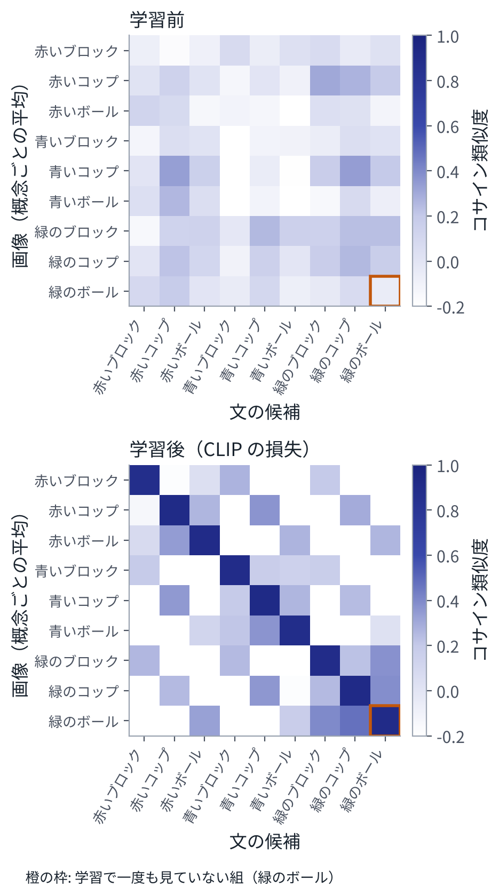

目次
1ねらい：画像と文を同じ空間に置く
画像のエンコーダ \(f\) と、文のエンコーダ \(g\) を用意する。どちらも Transformer で、出力を長さ 1 にそろえたベクトルにする。
\[ u = \frac{f(\text{画像})}{\|f(\text{画像})\|},\qquad v = \frac{g(\text{文})}{\|g(\text{文})\|} \]2 つのベクトルの内積 \(u^\top v\)（コサイン類似度、−1〜1）が、画像と文がどれだけ合っているかを表すようにしたい。合っている組では大きく、合っていない組では小さく、である。
学習に使うのは、インターネット上の画像と、その周りにある説明文の組である。CLIP は、4 億組を集めて学習した[1]。「犬」「車」のようなクラスを人が付ける必要はない。説明文そのものが、正解の役をする。
2CLIP：どの文がこの画像の説明か
\(n\) 組の画像と文を 1 つのバッチにする。画像 \(i\) と文 \(j\) の類似度を並べた \(n \times n\) の行列を作る。
\[ S_{ij} = s\; u_i^\top v_j \]\(s\) は 2 章の温度の逆数にあたる倍率で、CLIP ではこれも学習する。正しい組は対角成分 \(S_{ii}\) である。各行を「画像 \(i\) の説明はどの文か」という \(n\) 択の分類と見て、2 章の交差エントロピーを使う。列についても同じこと（「文 \(j\) はどの画像の説明か」）をして、平均する。
\[ L = -\frac{1}{2n}\sum_{i=1}^{n}\left[\log \frac{e^{S_{ii}}}{\sum_j e^{S_{ij}}} + \log \frac{e^{S_{ii}}}{\sum_j e^{S_{ji}}}\right] \]これを対照学習の損失（InfoNCE とも呼ぶ）という。正しい組を引き寄せ、同じバッチのほかの組（負例）を押し離す。勾配は、2 章と同じ「予測 − 正解」の形になる。
\[ \frac{\partial L}{\partial S} = \frac{1}{2n}\Big[\big(P^{\text{行}} - I\big) + \big(P^{\text{列}} - I\big)\Big] \]\(P^{\text{行}}\) は \(S\) の各行に softmax をかけたもの、\(P^{\text{列}}\) は各列にかけたもの、\(I\) は単位行列である。負例はバッチの中のほかの組なので、バッチが大きいほど負例が増える。CLIP は、1 つのバッチに 32,768 組を入れた[1]。
3SigLIP：組ごとに「合っているか」を当てる
CLIP の softmax は、行全体（バッチ全体）で割り算をするので、バッチの全部の組を同時に見る必要がある。SigLIP は、これを組ごとの 2 値分類に替えた[2]。
\[ L = -\frac{1}{n}\sum_{i=1}^{n}\sum_{j=1}^{n} \log \sigma\big(z_{ij}\,(t\, u_i^\top v_j + b)\big) \] \[ z_{ij} = \begin{cases} +1 & (i = j)\\ -1 & (i \ne j)\end{cases} \]\(\sigma(a) = 1/(1 + e^{-a})\) はシグモイド関数で、「合っている確率」を表す。\(t\) は倍率、\(b\) はずらしで、どちらも学習する。組ごとに独立なので、バッチの大きさに左右されにくく、計算も分けやすい。
\(n\) 組のバッチでは、正例が \(n\) 個、負例が \(n^2 - n\) 個ある。負例が圧倒的に多いので、はじめから「たいていは合っていない」と答えるように、\(b\) を大きな負の値（論文では −10）から始める。演習 7 では −5 から始めて、学習のあと −7.55 になった。
4ゼロショット分類
学習が終わると、分類のための学習をしなくても、画像を分類できる。クラスごとに文（「赤いブロックの写真」など）を作って \(g\) に通し、画像のベクトルといちばん内積が大きい文のクラスを答えにする。これをゼロショット分類という。新しいクラスを足すのに、文を 1 つ足すだけでよい。
演習 7 では、本物の画像と文の代わりに、色（赤、青、緑）と種類（ブロック、コップ、ボール）から作った「画像の特徴」と「文の特徴」を使う。画像には位置や明るさの違い、文には言い回しの違いが混ざる。そして、「緑のボール」の組だけは、学習データから外しておく。

学習後のゼロショット分類の正解率は 99%、学習で見ていない「緑のボール」でも、CLIP の損失で 97%、SigLIP の損失で 100% だった。「緑」は緑のブロックや緑のコップで、「ボール」は赤いボールや青いボールで学んでいて、その組み合わせを、2 つのエンコーダが同じ空間の上で作れたのである。これが、言葉で指示された見たことのない物を、VLM や VLA がある程度扱える理由の、いちばん単純な形である。
5VLM の目として使う
対照学習で作った画像エンコーダは、言葉と結びついた特徴を出す。そこで、多くの VLM が、これを画像の入り口に使う。
- LLaVA は CLIP の画像エンコーダ（ViT-L/14）を使う[3]。
- PaliGemma は SigLIP の画像エンコーダ（So400m/14）を使う[4]。π0 はこの PaliGemma を土台にしている（11 章）。
- OpenVLA は、SigLIP と、画像だけで学習した別のエンコーダ（DINOv2）の特徴を並べて使う[5]。
得意でないこと。対照学習が合わせるのは、画像と「説明文」である。説明文は、物の正確な位置、向き、数をあまり書かない。そのため、これらの違いが特徴に残りにくい。見た目がはっきり違うのに CLIP がほぼ同じと見なす画像の組があり、CLIP を目に使う VLM もそうした組で答えを誤ることが報告されている[6]。ロボットでは「どこに、どの向きで」が大事なので、この弱点は直接効く。OpenVLA が別のエンコーダを並べるのは、これを補うためである。
6演習
演習 7CLIP と SigLIP の対照学習
エンコーダは行列 1 つずつ。損失、正規化、勾配を numpy で手で書いてある。2 秒ほどで終わる。
python3 vla_math/ch07_contrastive.py出力の一部：
(1) 勾配の確認（数値微分との相対誤差の最大値）
CLIP の損失: 4.5e-09
SigLIP の損失: 1.5e-09
(2) CLIP で学習する（1 回に 64 組、2000 回）
0 回目: 損失 7.512
200 回目: 損失 2.251
2000 回目: 損失 2.227
(3) CLIP の結果（見ていない 900 組で測る. 当て推量なら 11%）
画像から文を探して、概念が合う割合: 学習前 7% → 学習後 99%
ゼロショット分類（文の候補 9 つから選ぶ）: 学習前 9% → 学習後 99%
そのうち、学習で見ていない「緑のボール」: 学習前 1% → 学習後 97%
見るところ：損失は 2.2 で止まり、0 にはならない。64 組のバッチには、学習に使う 8 つの概念が平均 8 組ずつ入っている。1 つの組から見ると、同じ概念（たとえば「赤いブロック」）のほかの組が 7 組ほどあり、それらは区別のしようがないのに、損失は「負例」として押し離そうとするからである。本物のデータでも、よく似た説明文の組は多い。
変えてみる：HELD_OUT を別の組にする。バッチの大きさを 16 や 256 にして、CLIP と SigLIP の違いを見る。
7まとめ
- 対照学習は、画像と説明文を、同じベクトルの空間の近い場所に置く。正しい組を引き寄せ、バッチの中のほかの組を押し離す。
- CLIP の損失は、「どの文がこの画像の説明か」の \(n\) 択の交差エントロピーである。SigLIP は、組ごとの 2 値分類に替えた。
- 学習のあとは、文を並べるだけで分類できる（ゼロショット）。色と物のように、別々に学んだものの組み合わせにも届く。
- 多くの VLM の目は、このエンコーダである。位置、向き、数のように説明文に書かれにくいことは苦手になりやすい。
8確かめる問題
- CLIP の損失の各行が、2 章の softmax 回帰と同じ形であることを確かめよ。クラスにあたるものは何か。
- CLIP で、バッチを大きくすると学習が有利になると考えられるのはなぜか。
- SigLIP で、ずらし \(b\) を大きな負の値から始めるのはなぜか。正例と負例の数を使って説明せよ。
- 学習で一度も見ていない「緑のボール」を当てられたのはなぜか。どんな場合なら当てられないと考えられるか。
9読むもの
※参考文献
- A. Radford et al., "Learning Transferable Visual Models From Natural Language Supervision," 2021. arXiv:2103.00020
- X. Zhai, B. Mustafa, A. Kolesnikov and L. Beyer, "Sigmoid Loss for Language Image Pre-Training," 2023. arXiv:2303.15343
- H. Liu, C. Li, Q. Wu and Y. J. Lee, "Visual Instruction Tuning," 2023. arXiv:2304.08485
- L. Beyer et al., "PaliGemma: A versatile 3B VLM for transfer," 2024. arXiv:2407.07726
- M. J. Kim et al., "OpenVLA: An Open-Source Vision-Language-Action Model," 2024. arXiv:2406.09246
- S. Tong et al., "Eyes Wide Shut? Exploring the Visual Shortcomings of Multimodal LLMs," 2024. arXiv:2401.06209